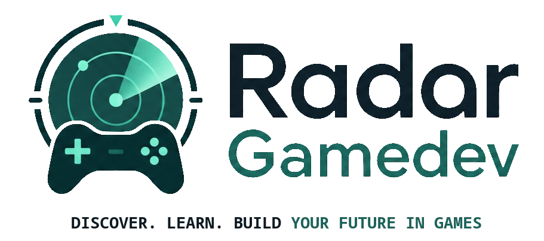

Curadoria
Crie um recurso para o mural do Radar GameDev.
Mídia especial
Escolha uma animação leve já disponível no projeto. O arquivo não será salvo no banco, apenas a referência.
O GIF da biblioteca será exibido no card no lugar da imagem enviada.
Nenhum GIF selecionado.
Ajuste o enquadramento quando o GIF estiver preenchendo o card.
Ajuste o enquadramento quando a imagem estiver como wallpaper.